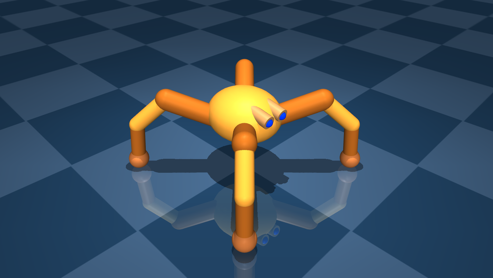
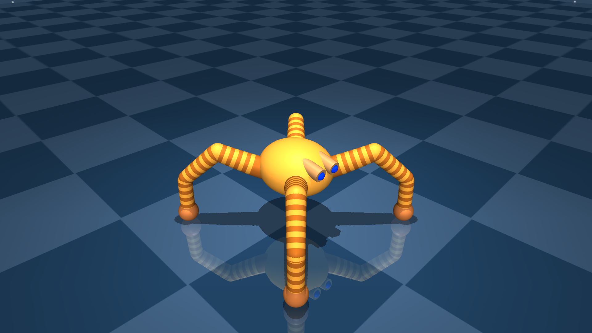
Reinforcement learning (RL) performs strongly on continuous control benchmarks, yet many real-world systems such as articulated robots, musculoskeletal models, and dexterous hands require controlling tens to hundreds of actuators. In this regime, action dimensionality can be a dominant bottleneck, but existing benchmarks often entangle dimensionality with changes in objectives, morphology, or contact dynamics, obscuring how algorithms truly scale.
We introduce HiGym, a high-dimensional continuous control benchmark built on DMControl. HiGym comprises six environment families with multiple tasks and six embodiment complexities. We isolate action-space scaling by keeping tasks and dynamics as similar as possible while increasing degrees of freedom via a principled embodiment-scaling procedure that recursively splits joints to reach target dimensionalities. This yields matched task variants that differ primarily in action dimension.
Across PPO, TD-MPC2, and TD-M(PC)2, we find that model-based methods degrade substantially less as dimensionality increases, preserving higher sample-efficiency and asymptotic performance than model-free baselines. Among model-based methods, we find that TD-M(PC)2's policy-constraint loss provides a consistent further gain at high DoF locomotion tasks by suppressing value overestimation that arises from a structural mismatch between the learned policy and planner's behavior policy.
Given a base model with n actuated joints per kinematic chain, HiGym recursively subdivides each chain by inserting intermediate bodies at equal arc-length positions. Three invariants are preserved: total curvature budget, total limb mass, and collision geometry. Reward, episode length, and termination criteria are held identical across DoF variants within a family.
Quadruped: same limb, more joints

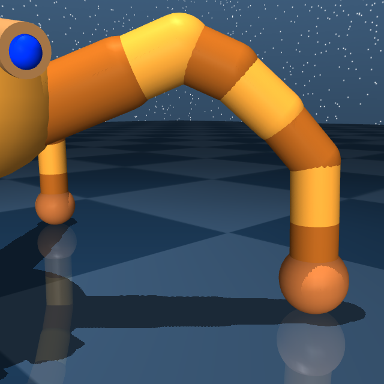
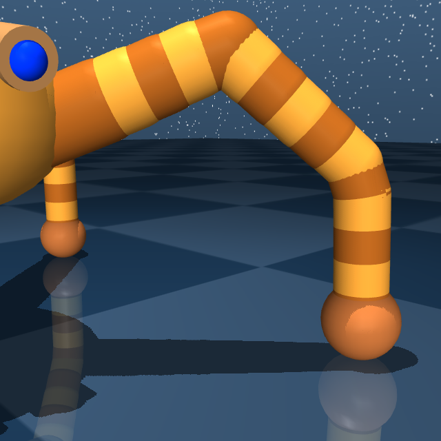
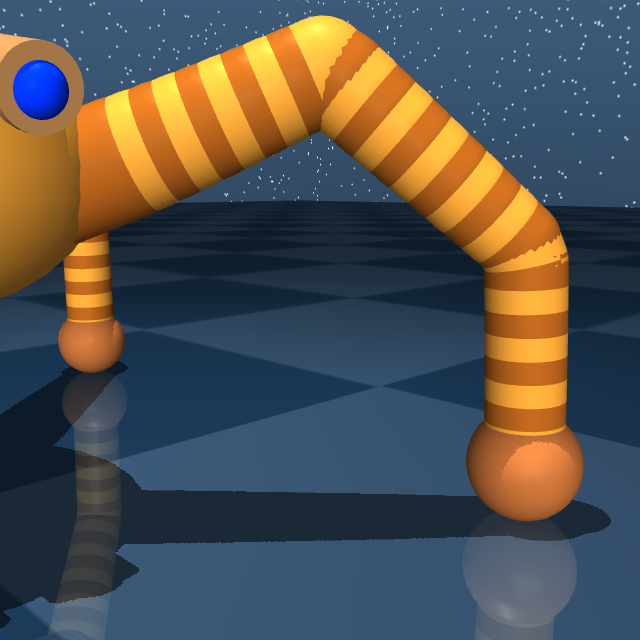
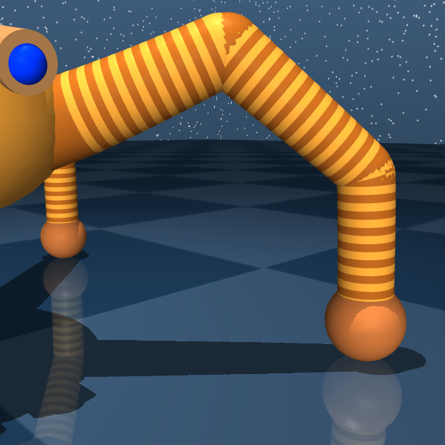
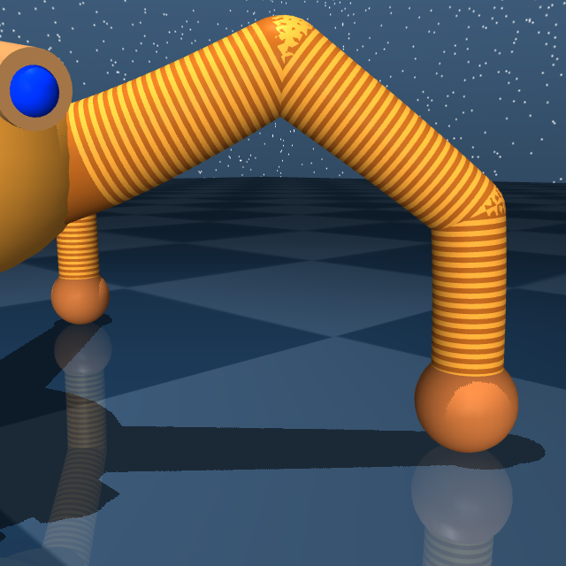
Cheetah: identical reach, denser actuators
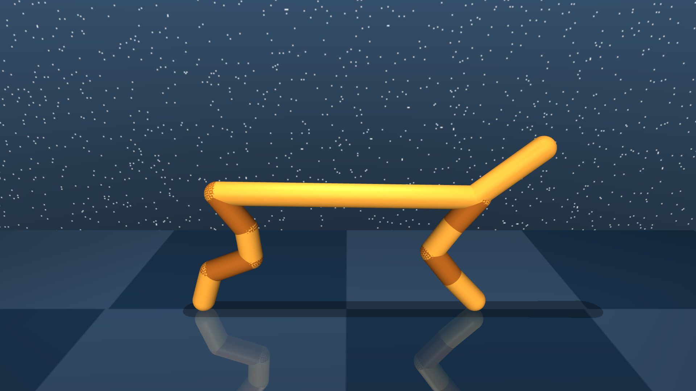
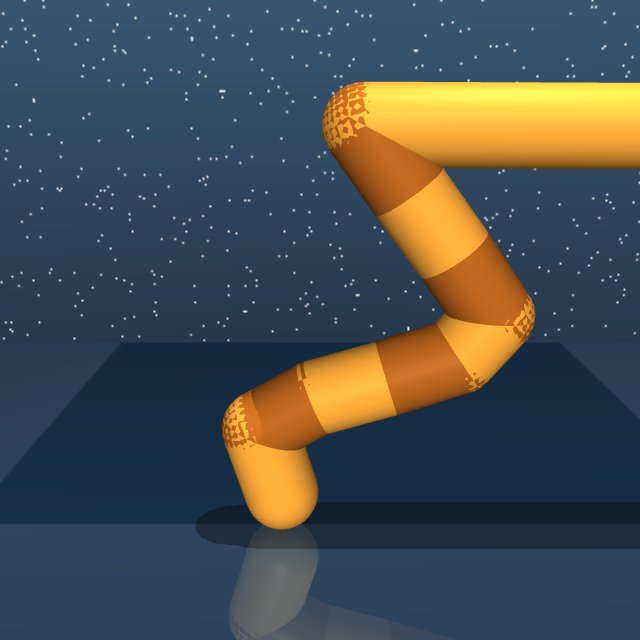
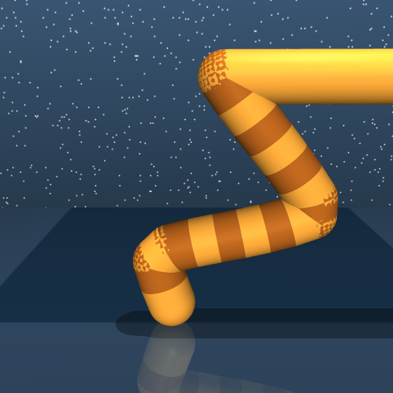
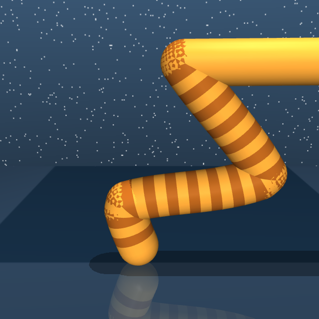
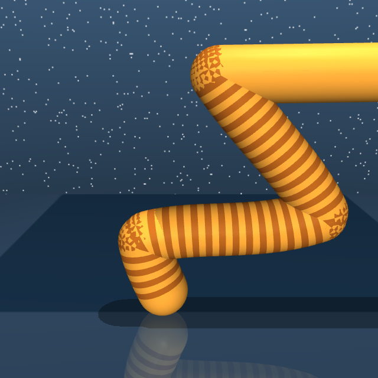
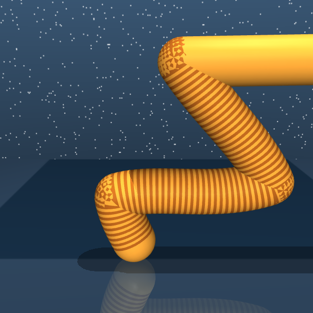
Legged locomotion (Quadruped, Cheetah, Walker), whole-body humanoid control (Humanoid CMU), and planar manipulation (Finger, Reacher), each instantiated at multiple matched DoF variants. Videos below show TD-M(PC)2 policies at a representative DoF.
Pick a family and a DoF to watch the converged TD-M(PC)2 policy, alongside the close-up that reveals joint subdivision and the matching embodiment render.

Every algorithm degrades with d, but the failure mode differs by class: PPO fails to learn beyond 32 to 64 DoF, and we trace this collapse to PPO's clipped surrogate objective.
Both TD-MPC2 variants preserve sample efficiency and asymptotic performance at high DoF, suggesting that planning in a fixed-dimensional latent space might scale better than on-policy rollouts in the physical action space.
Its margin over TD-MPC2 widens monotonically with d in locomotion but is limited in manipulation, indicating that its benefit is family-dependent rather than uniform across high-DoF tasks.
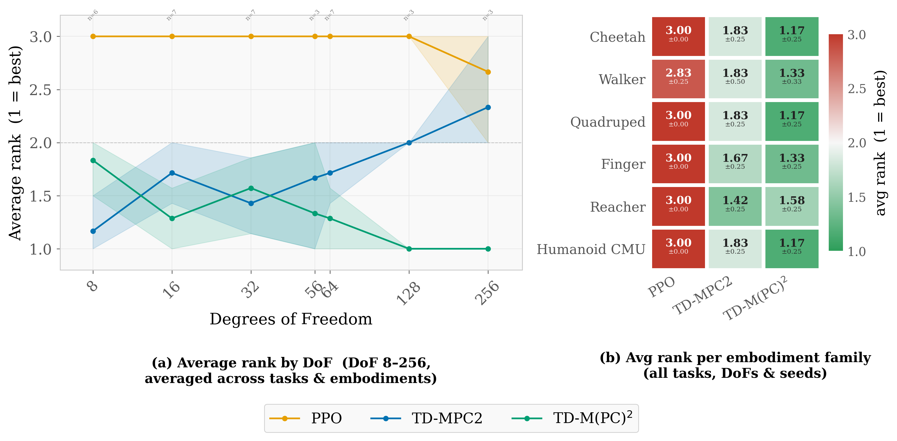
Algorithm ranking by DoF (panel a). Mean rank averaged across all (family, task) cells at each DoF; bootstrap 95% CIs. PPO holds rank near 3 throughout; TD-MPC2 starts near rank 1.5 and degrades toward 2.5 at 128 to 256 DoF as value overestimation intensifies; TD-M(PC)2 maintains rank 1 at high DoF.
Per-embodiment ranking (panel b). TD-M(PC)2's policy-constraint loss is most helpful for locomotion families (Cheetah, Walker, Quadruped, Humanoid CMU) and less so for manipulation (Finger, Reacher), where the underlying task remains effectively low-dimensional.
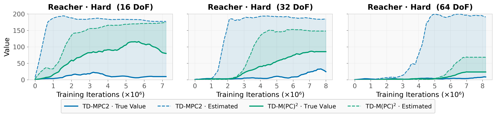
Value overestimation on Reacher-Hard. Estimated Q-value (dashed) versus true Monte-Carlo return (solid) across DoF variants. TD-MPC2's gap grows with DoF; TD-M(PC)2 substantially reduces it by anchoring the policy to the MPPI distribution.
@inproceedings{higym2026,
title = {HiGym: Learning to Act in High-Dimensional Spaces},
author = {Anonymous},
booktitle = {Advances in Neural Information Processing Systems},
year = {2026},
note = {Under review}
}